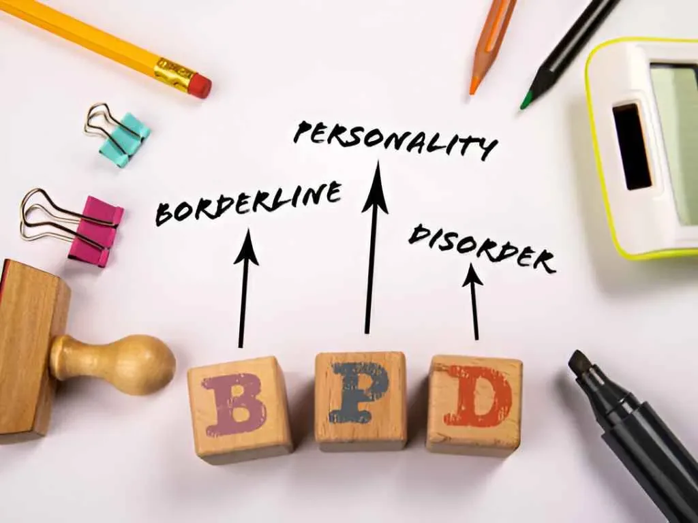

BPD Treatment
What is Borderline Personality Disorder?
Borderline Personality Disorder (BPD) is a mental health condition characterized by unstable relationships, self-image, and emotions, as well as impulsive behavior. People with BPD often experience intense mood swings, fear of abandonment, and difficulties in regulating their emotions. This mental disorder can be challenging to diagnose and treat, but with the right approaches, individuals can manage their symptoms and lead fulfilling lives.
What are the signs and symptoms?
A BPD psychiatrist assesses patients through a comprehensive evaluation, considering the presence of symptoms such as unstable relationships, identity disturbance, impulsivity, and emotional deregulation that have lasted for years.
What causes borderline personality disorder?
The exact cause of borderline personality disorder is not known, but studies suggest that environmental, genetic, and social factors may increase the chances of developing it. The following factors may include:
Environmental factors: A number of environmental factors seem to be common and widespread among people with BPD like victims of Childhood abuse and trauma, exposure to long-term fear or distress as a child
Genetics: BPD can run in families, the genes you acquire from your parents may make you more susceptible to acquiring it.
Brain Changes: The areas of the brain that control emotion and behaviour do not communicate correctly in people with BPD. These issues have an impact on how their brain functions.

How is borderline personality disorder diagnosed?
Borderline personality disorder psychiatrists evaluate patients through a comprehensive evaluation, considering the presence of the following symptoms such as unstable relationships, identity disturbance, impulsivity, and emotional dysregulation. DSM-5 set the criteria for diagnosing BPD, which include patterns of unstable relationships, self-image, impulsivity, and intense mood swings lasting for years.
It is commonly diagnosed in early adulthood and is more prevalent in females than males. Its symptoms can overlap with other mental health conditions, making accurate diagnosis crucial for effective treatment. Mental health professionals, particularly psychiatrists specializing in personality disorders, play an important role in diagnosing BPD.
How is borderline personality disorder treated?
Treating BPD involves a multidimensional approach that addresses emotional regulation, interpersonal difficulties, and impulsive behaviors. Collaborative efforts between mental health professionals, patients, and their support systems are essential for successful outcomes. Treatment approaches for BPD generally encompass psychotherapy, medication, and other adjunctive therapies.
Psychotherapy:
Psychotherapy, or talk therapy, is a cornerstone of BPD treatment. Dialectical Behavior Therapy (DBT) is one of the most widely used therapies for BPD. DBT combines cognitive-behavioral techniques with mindfulness practices. It helps individuals learn skills to manage their emotions, cope with stress, and enhance interpersonal effectiveness.
Cognitive Behavioral Therapy (CBT) is also effective for addressing negative thought patterns and behavior. It helps individuals recognize and change harmful behaviors by identifying and challenging distorted beliefs.
Medication:
Medication is not a primary treatment for BPD, it can be used to manage specific symptoms, such as depression, anxiety, and mood swings. Antidepressants, mood stabilizers, and antipsychotic medications may be prescribed to alleviate these symptoms. A Borderline Personality Disorder Specialist with experience in treating BPD can determine the most appropriate medication and dosage based on individual needs.
Adjunctive Therapies:
Complementary therapies can supplement traditional treatments and enhance overall well-being. Mindfulness practices, such as meditation and yoga, can help individuals develop better emotional awareness and regulation. Group therapy offers a supportive environment where individuals with BPD can share their experiences, learn from one another, and practice interpersonal skills.
Supportive Relationships:
Building and maintaining strong social support networks are essential for individuals with BPD. Friends, family members, and partners can provide encouragement, understanding, and stability. Loved ones can also learn about BPD to foster empathy and effective communication.
What is the prognosis for borderline personality disorder?
The stigma associated with personality disorders can deter individuals from seeking help, delaying diagnosis and treatment. Additionally, the intense emotional fluctuations that individuals with BPD experience may hinder their engagement in therapy. People with borderline personality disorder are more likely to experience the following if they do not receive the right treatment.
- Depression.
- Suicide.
- Substance and alcohol use disorder.
- Self-harm.
As we look to the future, personalized treatment plans based on an individual’s unique needs and experiences hold promise. Tailoring therapy and medication approaches can enhance treatment outcomes and help those with BPD achieve greater stability and well-being. Furthermore, ongoing research may uncover new insights into the neurobiology of BPD, leading to innovative therapeutic interventions.
Why is Dr. Gorav Gupta the best psychiatrist for Borderline Personality Disorder?
Dr. Gorav Gupta is the best psychiatrist in Delhi, Gurgaon & NCR for treating borderline personality disorder. He has high credentials, education, and experience in psychiatry. He has specialized training and experience in treating Mental disorders like BPD. Patient reviews or testimonials about Dr. Gorav’s approach, effectiveness, and patient satisfaction are also very good. Dr. Gupta is familiar with different approaches for the treatment of BPD e.g. Dialectical Behavior Therapy (DBT), Cognitive Behavioral Therapy (CBT), and other evidence-based therapies that are commonly used to treat BPD.